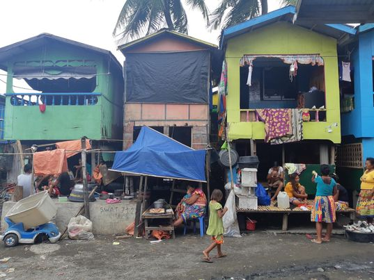
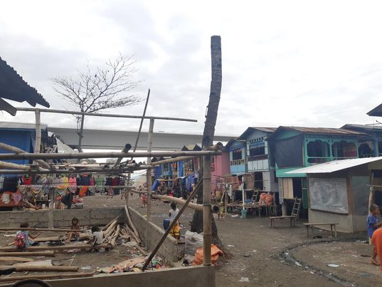
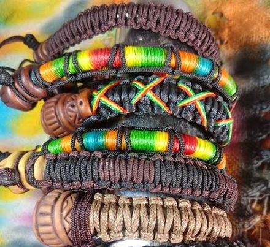
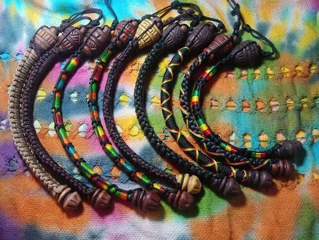
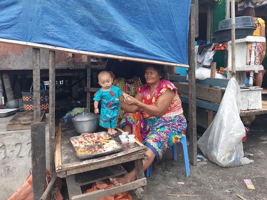
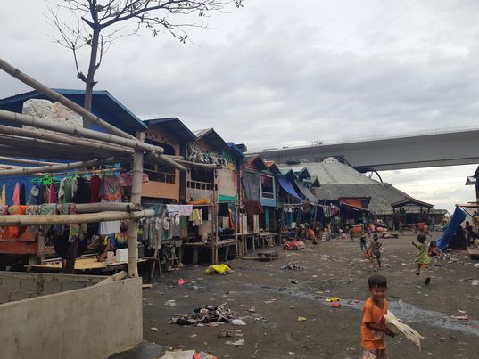

Institution
SIP
Background
MAPEH
Background

The Philippine economy fell to its worst post-war recession in 2020 amid
the COVID-19 pandemic. National Statistician Claire Dennis Mapa said
the 9.5-percent drop in gross domestic product (GDP) in 2020 was the
biggest since the government started recording yearly output in 1946
or after the Second World War. Solving the economic crisis in our country
relates to the situation the Badjao institution is facing because when our
economy declines, there would be a higher unemployment rate in our
community which causes those who are affected to struggle with providing
primary needs for their families. If we are able to overcome this crisis,
many people including members of the Badjao community won't struggle
to look for income sources anymore. Without any income, they won’t be
able to provide their daily necessities for their families and for themselves.
Significance
Why is the project important for the institution?
-Our proposed project indicates that the institution's present issue is lack of money and income.
Since this issue has the potential to negatively impact the Badjao community's way of life, we
should act to solve it. The institution is having a hard time making money owing to the epidemic
in order to feed their families and provide the students with essentials like school materials and
electronics. The institution's problem can be addressed by our suggested project because it has been
carefully prepared and can significantly aid the institution in generating their own income. The
participants in the institution can learn how to generate income for themselves in a sustainable and
effective manner through the course we propose. With this information, they can earn enough money to
provide for their families' everyday necessities.

Why is the project important for the Ateneo students?
-The project is important for Ateneo students
like ourselves because it helps for our awareness
about social issues taking place in our community.
Why is the project important for the public in general?
-Our project plays as our contribution to make things easier
for our fellow community members like the Badjaos especially
with the fact that the pandemic made a huge turn on their
financial state which caused many struggles in their daily life.
Rationale:
Our project is significant as it will aid the institution in generating their own income. This is made possible through having
the community members sell their self-made items using materials which are easily accessed in their area and native to their own
culture. The participants in the institution can learn how to generate profit for themselves in a sustainable and effective manner through
the courses we propose. With this, they can earn enough money to provide for their families' everyday necessities. Our proposal
promotes financial benefits which can supply the community with stable income for a long period independently.
Objectives:
For our project, our main goal is to make the institution members learn how to
make money for themselves through producing and selling their products.


Our project objectives include:
-Teach the institution members the proper skills to create decorations, ornaments and accessories using recycled parts.
-Teach the ability for the institution members to properly sell their products in order to make profit.
-Gain the ability to properly manage the income they gain through selling their products.
-Learn how to attract customers in order to advertise their products
Problem Identification and Proposed Intervention of the
Project Proposal


The institution's lack of money owing to the epidemic has the potential to negatively impact the Badjao community's way of life. The objective of our project is to guide the institution in generating their own income in order to feed their families and provide the students with essentials like school materials and electronics.
The first alternative is to donate money and supplies such as food, water, and other daily needs to the institution to help them temporarily relieve their current financial status. Second, we could introduce them to a source of income. And third, we can adapt a community project to civic private organizations or government agencies that can provide the needs of the partner institution. These organizations have extra funds that they can use to help out communities and organizations that are in need of financial income.
In our opinion, the best option is the 2nd one wherein we introduce them on how to make money for themselves. Due to the fact that they will be manufacturing their items from waste and recyclable materials, it is also tremendously economical and environmentally friendly. It is sustainable because there is a never-ending supply of material, as opposed to an infinite supply. As long as there is rubbish, there will always be material available for use. Our first choice is beneficial to the partner institution, but after giving it some thought, we realize that it won't be sustainable and that the resources won't last very long (isn’t a long term benefit for them) because we students won't have enough money to support all of their yearly/daily demands for years. The third alternative is also a good one, but we have also considered the possibility that community organizations and other groups may not wish to assist the partner institution, and their cash to purchase resources for the institution may not be particularly long-lasting as well. In conclusion, the 2nd option is the best among the three options.
We are very certain that our project will succeed as this can help the Badjao institution create a stable income in the long run, as opposed to our option of donating goods and money to the institution. Another clear indication of our project succeeding is that we will be able to teach the Badjao community about the ability for the institution members to create decorations, ornaments and accessories using recycled parts, for the institution members to properly sell their products in order to make profit, to be able to properly manage the income they gain through selling their products. The project reports which are also our working papers will be used as our project deliverables/tangible evidence of what our project achieved as they are intended to help or educate the Badjao community on how to solve their issue.
About The Web Designer
Samantha is a gentle, loving, and caring person. She loves to go out with her friends and family. She loves and adores her family and her pet dog. Samantha may be noisy when with friends but she is also serious with her academics. Samantha may joke around a lot ad tease her friends but she is very matured and caring when it comes to serious circumstances. She loves to do gaming, reading books, and sleeping.